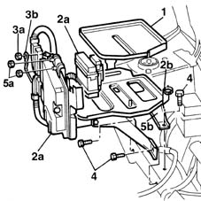
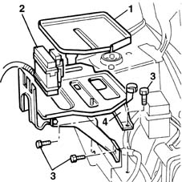

5530B52 Battery DRIP TRAY/SUPPORT - R.R.
- Path
- Procedures > 55 ELECTRICAL EQUIPMENT > 5530 CURRENT GENERATOR > 5530B battery and leads > 5530B52 Battery DRIP TRAY/SUPPORT - R.R.
- Kind
- repair procedure (removal / refitting; the operation number is the code)
- Applies to
- all engines; all production periods
- Interactive page
- https://sloeber94.github.io/elrnDB-fMltpl/en/#/2891914
Applies to: engines: 1.6 16v; all production periods
 Removing
Removing
 Refitting
Refitting1048A10 AIR CLEANER FILTERING ELEMENT - REPLACE
1. Remove the collection reservoir from the battery drip tray.
2. Release the fuse boxes (2a), which are a press fit, also open the band (2b) for the motor wiring.
3. Undo the nut (3a) and release the earth lead (3b) from the control unit mounting.
4. Undo the bolts fixing the battery drip tray to the bodyshell.
5. Undo the nuts (5a) fixing the injection control unit to the mounting, remove the control unit from the mounting, then remove the battery drip tray/injection control unit mounting assembly (5b).

Applies to: engines: 1.6 16v; all production periods
Refitting
RemovingCheck the condition of the battery drip tray.
Position the battery drip tray - control unit mounting assembly.
Tighten the bolts fixing the battery drip tray to the bodyshell.
 | Fastening | Component | Ø | Value (daNm) |
|---|---|---|---|---|
- | Bolt | BATTERY SUPPORT/CAGE | M8 | 3 |
Position the control unit on the mounting.
Tighten the nut fixing the control unit to the mounting.
| Fastening | Component | Ø | Value (daNm) |
|---|---|---|---|---|
- | Nut | INJECTION/IGNITION ECU MOUNT | M6 | 5.5 |
Position the earth cable on the control unit mounting and tighten the nut.
Secure the fuse boxes to the brackets and close the band securing the engine wiring.
Position the collection reservoir in the special housing in the drip tray.
Applies to: engines: 1.9 JTD 8V; all production periods
Removing
Refitting1048A10 AIR CLEANER FILTERING ELEMENT - REPLACE
1. Remove the collection reservoir from the battery drip tray.
2. Undo the fixing bolt and move the fuse box aside.
3. Undo the bolts fixing the battery drip tray to the bodyshell.
4. Remove the battery drip tray from the engine compartment.

Applies to: engines: 1.9 JTD 8V; all production periods
Refitting
RemovingCheck the condition of the battery drip tray.
Place the battery drip tray in position.
Tighten the bolts fixing the battery drip tray to the bodyshell.
| Fastening | Component | Ø | Value (daNm) |
|---|---|---|---|---|
- | Bolt | BATTERY SUPPORT/CAGE | M8 | 3 |
Position the control unit on the mounting.
Tighten the nut fixing the control unit to the mounting.
| Fastening | Component | Ø | Value (daNm) |
|---|---|---|---|---|
- | Nut | INJECTION/IGNITION ECU MOUNT | M6 | 5.5 |
Fit the fuse box on the battery drip tray.
Fit the acid collection reservoir.
Topics linked from this page (2)
Topics that link to this page (17)
- 1020D26 flywheel side oil seal cover - r+r
- 1020D38 flywheel side oil seal - replace
- 1024B10 engine flywheel - r + r for versions with manual gearbox
- 1810A20 clutch - r + r
- 1820A24 thrust bearing linkage - r + r
- 1280B30 OPERATING CYLINDER/CLUTCH HYDRAULIC ACTUATOR - R.R.
- 1280B45 RIGID supply PIPE from (pump) - master cylinder R.R. for right hand drive versions
- 2110A10 manual gearbox and differential - r + r
- 2125C30 gear engagement cable - r r
- 3330D14 brake servo - r+r for versions with abs - includes separation from master cylinder (pump)
- 3340A12 A'B.S. system. - electronic and hydraulic CONTROL UNIT R.R.
- 3340A13 abs central mount - r r
- 5040A44 air conditioner dehydrating filter/accumulator - r+r
- 5040A52 pipe from condenser to dehydrating filter - r+r
- 5040A54 pipe from dehydrating filter to expansion valve - r+r
- 5040A58 pipe from expansion valve to compressor - r+r
- 7025A28 bonnet lid opening cable - r r